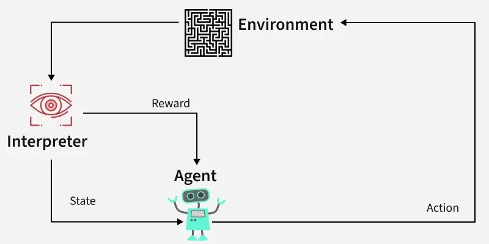

Aprendizaje por Refuerzo
Descubre cómo los agentes aprenden a tomar decisiones mediante prueba y error, maximizando recompensas y evitando penalizaciones.
¿Qué es?
El aprendizaje por refuerzo (RL) es una técnica de machine learning (ML) que entrena al software para tomar decisiones y lograr los mejores resultados. Imita el proceso de aprendizaje por ensayo y error que los humanos utilizan para alcanzar sus objetivos. Las acciones que acercan al software a su meta se refuerzan, mientras que las que se apartan se ignoran.
Los algoritmos de RL utilizan un paradigma de recompensa y castigo al procesar datos. Aprenden de los comentarios de cada acción y descubren por sí mismos las mejores rutas para lograr resultados finales. También son capaces de manejar gratificación aplazada.
Componentes Clave
- Agente: El que toma decisiones y ejecuta acciones.
- Entorno: El mundo o sistema en el que opera el agente.
- Estado: La situación o condición actual del agente.
- Acción: Los posibles movimientos o decisiones que el agente puede realizar.
- Recompensa: La retroalimentación o resultado del entorno basado en la acción del agente.
Ventajas del aprendizaje por refuerzo
- Resolución de problemas complejos: Capaz de abordar problemas que no se resuelven con técnicas convencionales.
- Corrección de errores: Aprende continuamente y corrige errores durante el entrenamiento.
- Interacción directa con el entorno: Aprende en tiempo real, permitiendo adaptabilidad.
- Manejo de entornos no deterministas: Eficaz en situaciones inciertas o cambiantes, ideal para aplicaciones reales.
Desventajas del aprendizaje por refuerzo
- No es adecuado para problemas simples: Excesivo para tareas donde algoritmos simples son más eficientes.
- Altos requisitos computacionales: Requiere grandes cantidades de datos y potencia computacional.
- Dependencia de la función de recompensa: Su eficacia depende del diseño de la recompensa; un diseño pobre puede llevar a comportamientos subóptimos.
- Dificultad en la depuración e interpretación: Comprender las decisiones del agente puede ser complicado, dificultando la resolución de problemas.
Ejemplo: Navegar por un laberinto

Imagina un robot recorriendo un laberinto para alcanzar un diamante, evitando zonas peligrosas. El agente explora, aprende de cada paso y ajusta su estrategia.
- Explora caminos posibles con movimientos arriba, abajo, izquierda, derecha.
- Recibe recompensas o penalizaciones según sus movimientos.
- Aprende rutas más efectivas con el tiempo.
- Descubre la estrategia óptima para llegar al objetivo evitando obstáculos.
Prueba Interactiva
A continuación se muestra un laberinto simple de 5x5 donde un agente aprende a navegar hasta la meta (cuadrado verde) mediante aprendizaje Q. Ajuste la velocidad de aprendizaje y la velocidad de exploración para ver cómo evoluciona la política del agente. Haga clic en "Ejecutar episodio" para entrenar al agente en un episodio o en "Reiniciar" para empezar de nuevo.
Código Q-Learning
Una tabla Q es una estructura de datos que almacena el valor esperado de cada acción en cada estado. El agente utiliza esta tabla para decidir qué acción tomar en cada estado, eligiendo la acción con el valor más alto (explotación) o explorando acciones aleatorias con cierta probabilidad.
A continuación se muestra una implementación en Python de Q-learning para un laberinto simple. Inicializa una tabla Q, la actualiza según las acciones y recompensas, y equilibra la exploración y la explotación.
import numpy as np
# Define the maze (0: free, 1: wall, 2: goal)
maze = np.array([
[0, 0, 0, 1, 0],
[0, 1, 0, 1, 0],
[0, 1, 0, 0, 0],
[0, 1, 1, 1, 0],
[0, 0, 0, 0, 2]
])
# Initialize parameters
learning_rate = 0.1
discount_factor = 0.9
exploration_rate = 0.1
episodes = 1000
actions = [(0, 1), (1, 0), (0, -1), (-1, 0)] # right, down, left, up
q_table = np.zeros((5, 5, 4)) # 5x5 maze, 4 actions
# Q-learning algorithm
for episode in range(episodes):
state = (0, 0) # Start position
while True:
# Choose action (exploration vs exploitation)
if np.random.rand() < exploration_rate:
action_idx = np.random.choice(len(actions))
else:
action_idx = np.argmax(q_table[state[0], state[1]])
# Take action
action = actions[action_idx]
next_state = (state[0] + action[0], state[1] + action[1])
# Check boundaries and walls
if (0 <= next_state[0] < 5 and 0 <= next_state[1] < 5 and maze[next_state] != 1):
state_valid = True
else:
state_valid = False
next_state = state
# Get reward
if state_valid and maze[next_state] == 2:
reward = 10
elif not state_valid:
reward = -1
else:
reward = -0.1
# Update Q-table
if state_valid:
q_table[state[0], state[1], action_idx] += learning_rate * (
reward + discount_factor * np.max(q_table[next_state[0], next_state[1]]) -
q_table[state[0], state[1], action_idx]
)
state = next_state
# Check if goal reached
if state_valid and maze[state] == 2:
break
print("Trained Q-table:")
print(q_table)